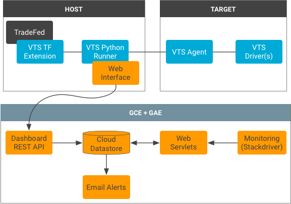

The VTS Dashboard provides a user backend and user interface for viewing test results from the VTS continuous integration system. It supports test-driven development with tools such as test status notifications to help developers to locate and prevent regression areas during the development cycle (include test monitoring and triaging support).
The user interface supports new features (such as native code coverage) provided by the VTS infrastructure and enables the development of tools with optimized and well-characterized performance by offering continuous performance monitoring.
The following services are required to use the VTS Dashboard:
Viewing test coverage relies on a REST API to a source code server (e.g. Gerrit), which enables the web service to fetch original source code according to existing access control lists.
The VTS Dashboard uses the following architecture:
Test status results are continuously uploaded to the Cloud Datastore database via a REST interface. The VTS runner automatically processes the results and serializes them using the Protobuf format.
Web servlets form the primary access point for users, delivering and processing data from the Datastore database. The servlets include: a main servlet for delivering all of the tests, a preferences servlet for managing user favorites, a results servlet for populating a test table, a graph servlet for preparing profiling data, and a coverage servlet for preparing coverage data for the client.
Each test module has its own Datastore ancestry tree and test results are indexed with the Unix timestamp of the test start time. Coverage data in the database is stored with the test results as a vector of counts (i.e. for each line in the original source file) and identifying information to fetch the source code from a source code server.
The notification service runs using task queues, identifying test case status changes, and notifying subscribers. Stateful information is stored in a status table to keep track of data freshness and existing failures. This allows for the notification service to provide rich information about individual test case failures and fixes.
VTS Dashboard essential components include the servlets implemented in Java,
the front-end JSPs, CSS stylesheets, and configuration files. The following list
details the locations and descriptions of these components (all paths relative
to test/vts/web/dashboard):
pom.xmlsrc/main/java/com/android/vts/api/src/main/java/com/android/vts/entity/src/main/java/com/android/vts/proto/VtsReportMessage.java, which is a Java
implementation of Protobuf type used to describe VTS test results.src/main/java/com/android/vts/servlet/src/main/java/com/android/vts/util/src/test/java/com/android/vts/src/main/webapp/js/. Contains Javascript files used by the web pages.WEB-INF/. Contains configuration and UI files.jsp/. Contains the JSP files for each web page.appengine-web.xmlweb.xmlcron.xmlTo set up the VTS Dashboard:
pom.xml:
mvn clean appengine:updateFor more information regarding Dashboard setup and configuration, refer to the Android VTS Code Lab.
Robust coverage information requires access to the original source code. However, some code may be sensitive and an additional gateway to it may allow for exploitation of existing access control lists.
To avoid this threat, instead of serving the source code with the coverage information, the Dashboard directly handles a coverage vector (i.e., a vector of execution counts mapping to the lines in a source file). Along with the coverage vector, the Dashboard receives a Git project name and path so that the client can fetch the code from an external source code API. The client browser receives this information and uses cross-origin resource sharing (CORS) in Javascript to query the source code server for the original source code; the resulting code is combined with the coverage vector to produce a display.
This approach does not widen the attack surface because the Dashboard uses the user's cookies to authenticate with an outside service. A user who cannot access source code directly cannot exploit the Dashboard to view sensitive information.